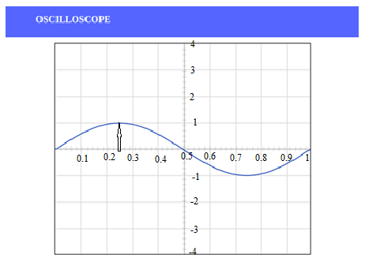

- Familiarisation of Function Generator
- To undertand Oscilloscope using the Sine, Square, and Triangle waveforms.
- Checking the frequencies of the Sine, Square, and Triangle waves on the waveform generator
- This experiment will help the students to learn measuring voltages, time, frequency.
- This experiment will help the students to learn about lissajous figures
Test Your Knowledge!!

The cathode-ray oscilloscope (CRO) is a common laboratory instrument that provides time and amplitude measurements of voltage signals over a wide range of frequencies. The CRO is a cathode-ray tube shown schematically in Figure 1.

Figure:1
The cathode ray is a beam of electrons which are emitted by the heated cathode (negative electrode) and accelerated toward the fluorescent screen. The assembly of the cathode, intensity grid, focus grid, and accelerating anode (positive electrode) is called an electron gun. Its purpose is to generate the electron beam and control its intensity and focus. Between the electron gun and the fluorescent screen are two pair of metal plates - one oriented to provide horizontal deflection of the beam and one pair oriented ot give vertical deflection to the beam. These plates are thus referred to as the horizontal and vertical deflection plates. The combination of these two deflections allows the beam to reach any portion of the fluorescent screen. Wherever the electron beam hits the screen, the phosphor is excited and light is emitted from that point. This conversion of electron energy into light allows us to write with points or lines of light on an otherwise darkened screen. In the most common use of the oscilloscope the signal to be studied is first amplified and then applied to the vertical (deflection) plates to deflect the beam vertically and at the same time a voltage that increases linearly with time is applied to the horizontal (deflection) plates thus causing the beam to be deflected horizontally at a uniform (constant> rate. The signal applied to the vertical plates is thus displayed on the screen as a function of time. The horizontal axis serves as a uniform time scale.
A dual trace oscilloscope can display two traces on the screen, allowing us to easily compare the input and output waveforms. In this experiment, channel 1 is connected to function generator 1 and channel 2 is connected to function generator 2.
Obtaining a clear and stable trace
Once if we connect the oscilloscope to the circuit, it is necessary to adjust the controls to obtain a clear and stable trace on the screen in order to test it. In this experment, the input is given through two function generator.
- The Y AMPLIFIER (VOLTS/CM) control determines the height of the trace. Choose a setting so the trace occupies at least half the screen height, but does not disappear off the screen.
- The TIMEBASE (TIME/CM) control determines the rate at which the dot sweeps across the screen. Choose a setting so the trace shows at least one cycle of the signal across the screen. Note that a steady DC input signal gives a horizontal line trace for which the time base setting is not critical.
- The TRIGGER control is usually best left set to AUTO.
Measuring voltage and time period
The trace on an oscilloscope screen is a graph of voltage against time. The wavegorm of this graph is determined by the nature of the input signal. In addition to the properties labeled on the graph, there is frequency which is the number of cycles per second. The diagram shows a sine wave but these properties apply to any signal with a constant shape.
Figure:2
- Amplitude is the maximum voltage reached by the signal. It is measured in volts.
- Peak voltage is another name for amplitude.
- Peak-peak voltage is twice the peak voltage (amplitude). When reading an oscilloscope trace it is usual to measure peak-peak voltage.
- Time period is the time taken for the signal to complete one cycle. It is measured in seconds (s), but time periods tend to be short so milliseconds (ms) and microseconds (μs) are often used. 1ms = 0.001s and 1μs = 0.000001s.
- Frequency is the number of cycles per second. It is measured in hertz (Hz), but frequencies tend to be high so kilohertz (kHz) and megahertz (MHz) are often used. 1kHz = 1000Hz and 1MHz = 1000000Hz.
\(Time period = \frac{1}{Frequency}\)
Voltage: Voltage is shown on the vertical y-axis and the scale is determined by the Y AMPLIFIER (VOLTS/Div) control. Usually peak-peak voltage is measured because it can be read correctly even if the position of 0V is not known. The amplitude is half the peak-peak voltage.
\(Voltage = distance in Div \times volts/Div \)
Time period: Time is shown on the horizontal x-axis and the scale is determined by the TIMEBASE (TIME/Div) control. The time period (often just called period) is the time for one cycle of the signal. The frequency is the number of cycles per second, frequency = 1/time period.
\(Time = distance in Div \times time/Div\)
Lissajous Figure
The oscilloscope used to display the time-varying input signal to channel 1 or channel 2. The oscilloscope displayed the information so that the value of the signal voltage was traced along the vertical while the oscilloscope traced a uniform time axis along the horizontal. However, it is useful to control the horizontal signal with an external source using the oscilloscope in the xy mode. This mode is generates Lissajous figures – these are figures created by connecting channel 1 to a function generator outputting a sine wave and channel 2 to a different sinusoid - hence the need for sharing functions generators. By letting channel 1 drive the horizontal and channel 2 the vertical, a shape will be traced out on the scope’s display.
The following figure shows some of the possible curves that can be drawn by varying the frequency and phase of the sinusoidal functions. However, the phase of the signal generator outputs is fixed, though it often drifts slowly with time.

Figure:3
Function Generator
A function generator is a device that can produce various patterns of voltage at a variety of frequencies and amplitudes. It is used to test the response of circuits to common input signals. The electrical leads from the device are attached to the ground and signal input terminals of the device under test.
Features and controls
- Most function generators allow the user to choose the shape of the output from a small
number of options.
- Square wave - The signal goes directly from high to low voltage.
- Sine wave - The signal curves like a sinusoid from high to low voltage.
- Triangle wave - The signal goes from high to low voltage at a fixed rate
Figure:4

Figure:5

Figure:6
- The amplitude control on a function generator varies the voltage difference between the high and low voltage of the output signal.
- The direct current (DC) offset control on a function generator varies the average voltage of a signal relative to the ground.
- The frequency control of a function generator controls the rate at which output signal oscillates. On some function generators, the frequency control is a combination of different controls.
- One set of controls chooses the broad frequency range (order of magnitude) and the other selects the precise frequency. This allows the function generator to handle the enormous variation in frequency scale needed for signals.
How to use a function generator?
- After powering on the function generator, the output signal needs to be configured to the desired shape. Typically, this means connecting the signal and ground leads to an oscilloscope to check the controls.
- Adjust the function generator until the output signal is correct, then attach the signal and ground leads from the function generator to the input and ground of the device under test.
- For some applications, the negative lead of the function generator should attach to a negative input of the device, but usually attaching to ground is sufficient.

- Connect the components as mentioned below:
L1-L5, L3-L6, L4-L7, L2-L7.(For eg. click on 1 and then drag to 5 and so on.) - Click on 'Check Connection' button to check the connections.
- If connected wrong, double click on the wrong connection. Else click on 'Delete all connection' button to erase all the connections.
- Connect L1-L5. This will connect the function generator 1 to channel 1 probe of oscilloscope.
- Connect L3-L6. This will connect the function generator 2 to channel 2 probe of oscilloscope.
- Connect L4-L7, L2-L7. This will connect the ground of function generator 1 and function generator 2 with oscilloscope.
- Click on 'ON' button to start the experiment.
- Double Click on 'Sine Wave' button to generate input waveform (2 Vp-p, 1kHz) from Function Generator 1.
- Double Click on 'Sine Wave' button to generate input waveform (2 Vp-p, 1kHz) from Function Generator 2.
- Vary the Amplitude, Frequency, volt/div using the controllers.
- Double Click on "Dual" button to observe both the waveform.
- Click on "X-Y" button to observe the specialized two-channel mode of oscilloscope. The XY time mode converts the oscilloscope from a volts-versus-time display to a volts-versus-volts display using two input channels. Channel 1 is the X-axis input, channel 2 is the Y-axis input.
- Channel 1 shows the waveform of Function Generator 1, Channel 2 shows the waveform of Function Generator 2.
- Repeat step 8-12 for 'Square Wave' and 'Triangular Wave'. Double Click on input button to generate input waveform (2 Vp-p, 1kHz) from Function Generator 1 and Function Generator 2.
- Note : Sometimes due to page load or cache, the graph may not come exact at one click. So it is better to double click on the channel-1 function/ channel-2 function/ dual function/ground function to get the respective signals.
- Oscilloscope and function generator is described more elaborately in the Oscilloscope Tutorial section.
Figure:1
Note:
- The input sine wave is 2 Vp-p, 1kHz
- As, volt/div is set to 1 volt/div. Which implies each mazor division is 1 volt where as each minor division is 0.2 volt.
- Click on Sine Wave from function generator 2.
- As, volt/div is set to 1 volt/div. Which implies each mazor division is 1 volt where as each minor division is 0.2 volt.
- Click on "Channel 1" or "Channel 2" button to observe input waveform.
- Double Click on "Dual" button to observe both the waveform
- Click on "X-Y" button to observe the specialized two-channel mode of oscilloscope. (X-Y mode is a specialized two-channel mode of oscilloscopes when the signal of channel 1 is used for the deviation along the horizontal axis (X) and the signal of channel 2 – along the vertical axis (Y).)
Tutorial
- a screen to display a waveform,
- input jacks for connecting the signal to be displayed,
- dials to control how the signal will be displayed.
The screen is cathode ray tube found in most television sets where the face of the screen is divided up into a
2 dimensional grid (or axes or scale); In this experiment we consider 8x10 grid.
The vertical grid is divided up into 8 (major) divisions and the horizontal grid is divided into 10 major divisions.
To improve the precision, each of these divisions is further broken up into 5 minor divisions.
The horizontal axis (X-axis) represents time and the vertical axis (Y-axis) represents voltage. The scope displays (also called a signal trace or trace) the input signal voltage along the vertical (or Y-axis) while an internally generated signal (called the horizontal sweep or sweep signal) is simultaneously produced along the X-axis creating a 2- dimensional time trace of the input signal.

Figure:1
volts/div- This control lets you change how many volts are represented by each vertical increment of grid (vertical axis) on the screen. Basically, it allows you to zoom in and out along the y axis.
time/div- This control lets you change how much time is represented by each horizontal increment of the grid overlay on the screen. It allows you to zoom in and out along the x axis.
If volt/div is set to 1 volt which implies each mazor vertical division is 1 volt where as each minor vertical division is 0.2 volt. And time/div is set to 0.1 ms/div which implies each maor horiontal division is 0.1 ms. Voltage on the vertical scale is 1 volt/div multiply by (number of division). Time on the horizontalscale is 0.1 ms multiply by (number of division). In the figure 2, 1 volt/div and amplitude of the input signal is 1 volt. Here 0.1 ms/div, the frequency is 1 kHz and its period is 1 complete cycle in 1 ms.

Figure:2
In the figure 3, if volt/div is set to 2 volt/div, which implies each mazor division is 2 volt where as each minor division is 0.5 volt.

Figure:3
Note: If you set the Volts/Div too low, you’ll clip the signal. Similarly, setting it too high, and you’ll won’t find the signal, i.e. the signal will b flat. ncreasing the Timebase will display more cycles of a periodic signal. Conversely, reducing the Timebase, fewer cycles will be displayed.
Oscilloscope and function generator is described more elaborately in the attached file. Download the file.
Virtual Oscilloscope Tutorial : Oscilloscope Tutorial


Test Your Knowledge!!